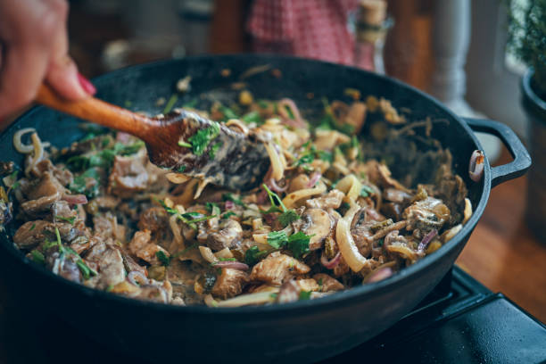

Go Back
Simple Beef Stroganoff

Description
Beef stroganoff is an iconic Russian dish that consists of beef in a creamy sauce. According to legend, it was created by chefs who worked for the Stroganov family in the 1800s. The dish is often made with mushrooms and served over rice or egg noodles.
Ingredients
- 1 (8 ounce) package egg noodles
- 1 pound ground beef
- 1 (10.5 ounce) can fat-free condensed cream of mushroom soup
- 1 tablespoon garlic powder, or to taste
- ½ cup sour cream
- salt and ground black pepper to taste